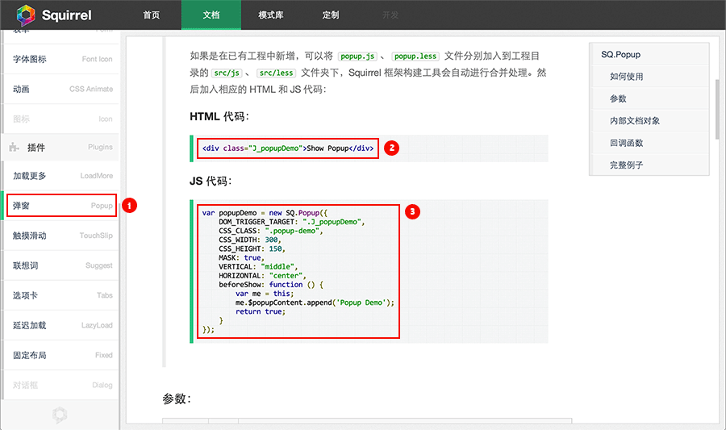

首先要获取 Squirrel 代码，您可以点击下载按钮来获取托管于 Github 的最新版本。
解压缩后即可看到以下目录结构——这是 Squirrel 最基本组织架构，里面包含了已经编译并压缩好的 CSS 和 JS 文件，还有一些图片和字体文件。
Squirrel/
├── css/
│ ├── squirrel.min.css
├── js/
│ ├── squirrel.min.js
└── images/
│ ├── sq-icon@2x.png
└── font/
│ ├── fontello.ttf
│ ├── fontello.woff
└── index.html其中 index.html 文件是一个最精简的 HTML 模板，您可以在这个模板的基础上对按照自己的需求进行修改。
<!DOCTYPE HTML>
<html>
<head>
<meta http-equiv="Content-Type" content="text/html; charset=utf-8" />
<meta name="viewport" content="width=device-width, initial-scale=1.0, maximum-scale=1.0" />
<link type="text/css" rel="stylesheet" href="dist/css/squirrel-min.css" />
<title>Squirrel 3</title>
</head>
<body>
<h1>Hello World!</h1>
<script type="text/javascript" src="../libs/zepto/zepto-1.0.min.js"></script>
<script type="text/javascript" src="dist/js/squirrel-min.js"></script>
</body>
</html>
值得注意的是：模板中引入了 zepto.js，这是因为 Squirrel 依赖 zepto 或者 jQuery 库，您可以根据项目情况自行配置该文件路径。
Squirrle 3 工程套件包括框架源码、单元测试和自动化构建工具，是一套完整的前端开发、测试、发布解决方案（工程套件需要 NodeJS、npm 和 Grunt 支持，请自行配置），您可以手动下载 Squirrle 3 工程套件包 Project-Template（15MB），或者通过 npm 命令安装：
npm install squirrel-pt
安装完成后可以看到以下目录结构：
Squirrel-pt/
├── app/ (应用目录)
│ ├── dist/ (构建代码)
│ │ ├── css/
│ │ ├── js/
│ │ ├── images/
│ │ ├── font/
│ ├── src/ (源码)
│ │ ├── less/
│ │ ├── js/
│ ├── index.html
├── libs/ (第三方 JS 类库)
│ ├── zepto/
│ │ ├── zepto-1.0.min.js
├── test/ (单元测试)
├── tools/ (自动化构建工具)
│ ├── grunt/
└── index.html在工程的grunt目录下可以执行 Grunt 命令：
grunt build // 执行构建 grunt watch // 监视文件，发现变化自动构建 grunt jsdocs // 生成 JSDoc 模板
Squirrel 集成了多种常用的组件及插件，只需要简单的几步就可以构建一个应用：

| 系统 | 版本 | 支持情况 | ||||||||
|---|---|---|---|---|---|---|---|---|---|---|
| Android |
|
|
||||||||
| Apple |
|
|
||||||||
| Windows Phone |
|